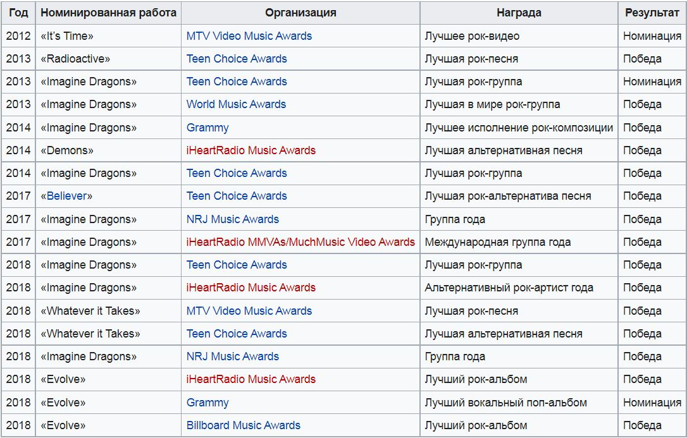

Титулы
В общей сложности группа имеет 73 номинации, среди которых 23 — победные. В список наград группы входят такие престижные премии как Grammy Awards, American Music Awards, Billboard Music Awards и другие.

Источник
Интерестные факты
Группа записала песню «Warriors», приуроченную к Чемпионату Мира по игре League of Legends. Песня была продемонстрирована всему миру 18 сентября, в день начала Чемпионата, на YouTube канале Riot Games, как музыкальное сопровождение к анимированному клипу.